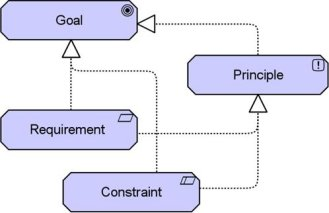

The Goal Realisation viewpoint allows a designer to model the refinement of (high-level) goals into more concrete goals, and the refinement of concrete goals into requirements or constraints that describe the properties that are needed to realise the goals.
| Stakeholders | Stakeholders, business managers, enterprise and ICT architects, business analysts, requirements managers |
| Concerns | Architecture mission, strategy and tactics, motivation |
| Purpose | Designing, deciding |
| Abstraction Level | Coherence, Details |
| Layer | Business, Application, and Technology layers |
| Aspects | Motivation |
Concepts and Relations
